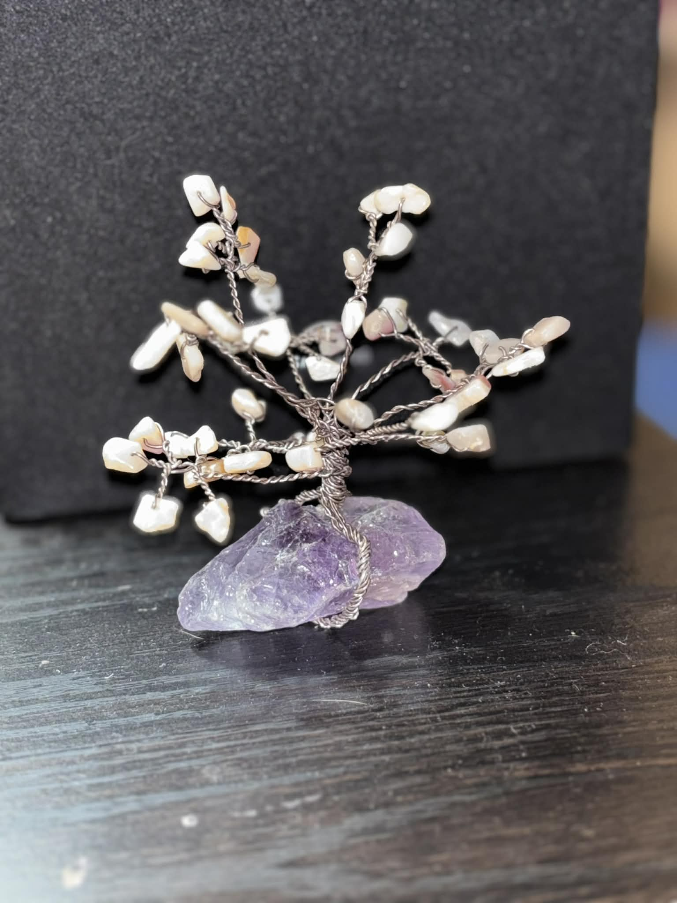
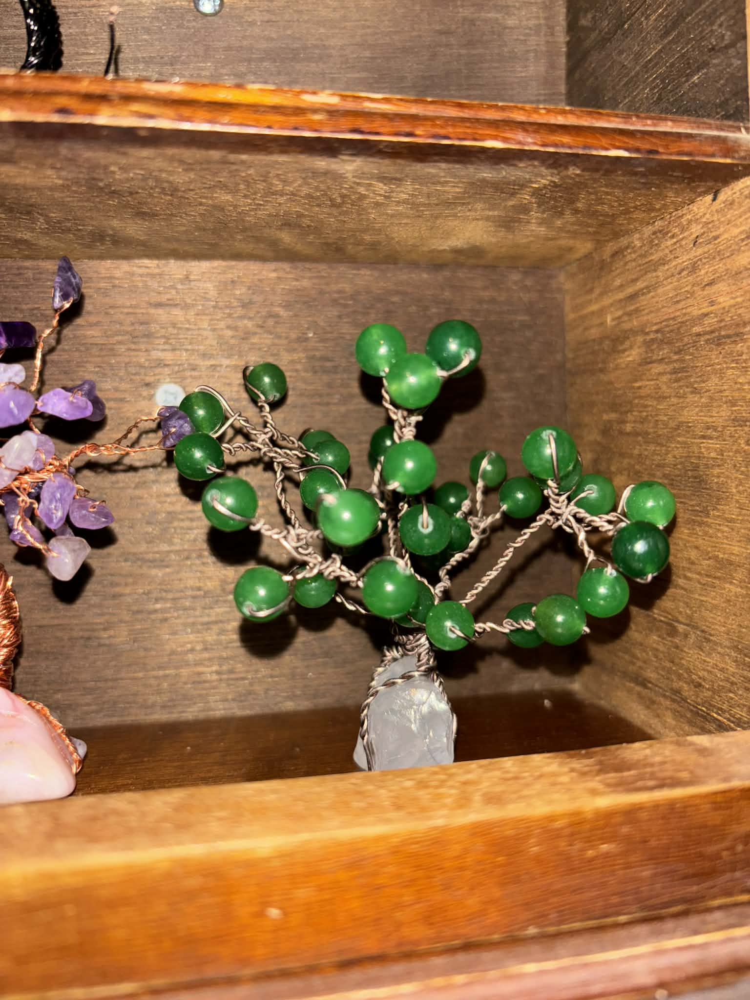

Sourcing the Foundation
The process begins with the base. Fish hand-selects raw geodes, polished agates, and petrified wood from around the world. These bases aren't just weights; they are the anchors for the tree's energetic frequency.
- • Raw Fluorite for Healing
- • Obsidian for Grounding
- • Amethyst for Peace


The Twist
Using copper, silver, and colored jewelry-grade wire, Fish employs a unique "root-to-canopy" twisting technique. No glue is used in the tree structure itself—the entire form is held together by the tension of over 100 individual wire strands.
"The wire represents the flow of life, while the stones represent the milestones we reach along the way." — Fish
The Leaflet
The final stage is the crown. Hundreds of individual gemstone "leaflets" are meticulously hand-wired onto the branches. Each leaflet is chosen for its specific vibration, creating a symphony of color and energy that brings the sculpture to life.
From Citrine clusters to Lapis Lazuli points, every leaflet is a unique expression of nature's beauty.
